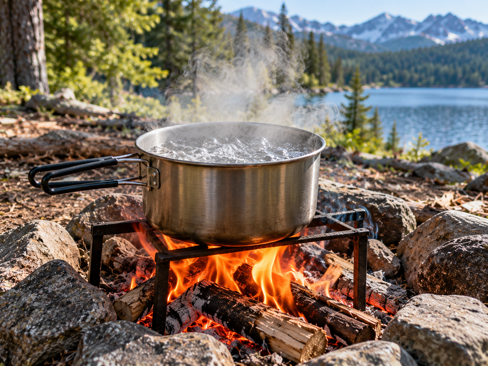

Boiling Water

Boiling is one method that can help make water safer to drink.
What It Is
Boiling uses high heat to kill many disease-causing microorganisms that may be present in water.
When to Use It
Boiling can be used when the safety of available water is uncertain and a safe heat source is available.
How It Works
If the water is cloudy, it should first be allowed to settle and be filtered through a clean cloth when possible. The water can then be brought to a rolling boil before being allowed to cool.
Materials Needed
- Water
- Heat-safe container
- Safe heat source
- Clean storage container
Source
Water safety information: CDC - Making Water Safe in an Emergency